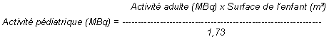

RÉSUMÉ DES CARACTÉRISTIQUES DU PRODUIT
ANSM - Mis à jour le : 07/04/1999
PHYTACIS. Trousse pour la préparation de la solution injectable de phytate de technétium (99m Tc)
2. COMPOSITION QUALITATIVE ET QUANTITATIVE
Phytate de sodium anhydre ................................................................................................................ 20 mg
Pour un flacon.
Le produit ne contient pas de conservateur antimicrobien.
Pour la liste complète des excipients, voir rubrique 6.1.
Poudre pour solution injectable en flacon multidose.
4.1. Indications thérapeutiques
Après reconstitution avec une solution injectable de pertechnétate (99mTc) de sodium, ce produit est utilisé pour la scintigraphie hépatique.
4.2. Posologie et mode d'administration
Chez l'adulte et chez le sujet âgé, les activités recommandées en injection intraveineuse unique sont comprises entre 37 et 100 MBq. La scintigraphie peut être réalisée 10 à 60 minutes après l'injection.
Chez l'enfant l'activité administrée est une fraction de l'activité injectée chez l'adulte.
L'activité est généralement calculée en fonction de la surface corporelle selon la formule suivante:

Dans certains cas, l'activité peut être calculée en fonction de la masse corporelle de l'enfant:
L'activité à administrer à l'enfant peut aussi être calculée par application des coefficients suivants:
|
3 kg = 0,10 |
22 kg = 0,50 |
42 kg = 0,78 |
|
4 kg = 0,14 |
24 kg = 0,53 |
44 kg = 0,80 |
|
6 kg = 0,19 |
26 kg = 0,56 |
46 kg = 0,82 |
|
8 kg = 0,23 |
28 kg = 0,58 |
48 kg = 0,85 |
|
10 kg = 0,27 |
30 kg = 0,62 |
50 kg = 0,88 |
|
12 kg = 0,32 |
32 kg = 0,65 |
52-54 kg = 0,90 |
|
14 kg = 0,36 |
34 kg = 0,68 |
56-58 kg = 0,92 |
|
16 kg = 0,40 |
36 kg = 0,71 |
60-62 kg = 0,96 |
|
18 kg = 0,44 |
38 kg = 0,73 |
64-66 kg = 0,98 |
|
20 kg = 0,46 |
40 kg = 0,76 |
68 kg = 0,99 |
E.A.N.M. (European Association of Nuclear Medicine)
Chez le très jeune enfant (moins d'un an), une activité minimale de 15 MBq est nécessaire à l'obtention d'images de qualité satisfaisante.
Aucune connue à ce jour.
4.4. Mises en garde spéciales et précautions d'emploi
Ce produit est un médicament radiopharmaceutique.
Les produits radiopharmaceutiques ne peuvent être réceptionnés, utilisés et administrés que par des personnes autorisées dans des services agréés.
Leur réception, leur stockage, leur utilisation, leur transfert et leur élimination sont soumis aux réglementations et aux autorisations appropriées des autorités compétentes.
Les produits radiopharmaceutiques doivent être préparés de manière à satisfaire à la fois aux normes de radioprotection et de qualité pharmaceutique. Les précautions appropriées d'asepsie doivent être prises afin de satisfaire aux exigences des Bonnes Pratiques de Fabrication pharmaceutique.
4.5. Interactions avec d'autres médicaments et autres formes d'interactions
Une diminution de la fixation hépatique peut être observée en cas de traitement par les anesthésiques généraux, tels que l'halothane, en raison d'une diminution de la perfusion hépatique.
La biodistribution des colloïdes radiomarqués peut être modifiée par les médicaments exerçant une hépatotoxicité transitoire ou chronique, tels que les médicaments antinéoplasiques, notamment les nitroso-urées.
Lorsqu'il est nécessaire d'administrer des produits radiopharmaceutiques à la femme en âge de procréer, toute éventualité de grossesse doit être écartée. Toute femme n'ayant pas eu ses règles doit être considérée comme enceinte jusqu'à preuve du contraire. Dans le doute, il est important que l'exposition aux radiations soit réduite au minimum pour obtenir les informations cliniques souhaitées. D'autres techniques n'impliquant pas l'emploi de radiations ionisantes peuvent être envisagées si elles n'altèrent pas la qualité diagnostique.
Les examens utilisant des radionucléides chez la femme enceinte entraînent également l'irradiation du fœtus. Il ne faut réaliser au cours de la grossesse que les seules investigations absolument nécessaires lorsque le bénéfice probable dépasse les risques encourus par la mère et le fœtus.
Si l'administration d'un produit radioactif est indispensable, le lait sera tiré avant l'injection et conservé pour être utilisé ultérieurement. L'allaitement doit être suspendu pendant au moins 12 heures après l'injection et le lait produit pendant cette période doit être éliminé. L'allaitement peut être repris lorsque l'activité dans le lait ne risque pas d'entraîner une dose de radiation pour l'enfant supérieure à 1mSv.
4.7. Effets sur l'aptitude à conduire des véhicules et à utiliser des machines
Aucun connu à ce jour.
Aucun effet indésirable n'a été signalé.
Pour tous les patients, l'exposition aux radiations ionisantes doit être justifiée par le bénéfice diagnostique attendu. La radioactivité administrée doit être telle que l'irradiation qui en découle soit aussi faible que possible, en gardant à l'esprit la nécessité d'obtenir le diagnostic requis.
L'exposition aux radiations ionisantes peut potentiellement induire des cancers ou développer des déficiences héréditaires. L'expérience montre que, pour ce qui est des examens diagnostiques en médecine nucléaire, la fréquence de ces effets indésirables est très faible en raison des faibles activités utilisées.
Pour la plupart des examens de médecine nucléaire à des fins de diagnostic, la dose de radiations délivrée (dose efficace) est inférieure à 20 mSv. L'utilisation de plus fortes activités se justifie dans certaines circonstances cliniques.
Il n'existe pas de traitement spécifique en cas d'administration d'une activité excessive de phytate de technétium (99mTc).
5. PROPRIETES PHARMACOLOGIQUES
5.1. Propriétés pharmacodynamiques
Produit radiopharmaceutique à usage diagnostique,
(V: DIVERS).
Aux concentrations chimiques et aux activités recommandées pour les examens de diagnostic, le phytate de technétium (99mTc) paraît n'avoir aucune activité pharmacodynamique.
5.2. Propriétés pharmacocinétiques
Le phytate de technétium (99mTc) est un complexe de l'acide mésoinosito-hexaphosphorique qui forme un colloïde en présence du calcium sérique; le colloïde est capté par le système réticulo-endothélial. La captation de corps étrangers, y compris les particules, par les cellules du système réticulo-endothélial est un phénomène bien documenté.
La distribution in vivo des colloïdes est fonction de plusieurs facteurs tels que la masse hépatique, la masse splénique, la perfusion hépatique, l'intégrité du système réticulo-endothélial, les propriétés physiques du colloïde, ainsi que la taille et le nombre de particules. Les particules de grande taille (> 8 μm) sont séquestrées au niveau pulmonaire, les particules dont la taille se situe entre 300 et 1000 nm sont captées essentiellement au niveau hépatique et splénique; les particules ≤100 nm sont captées au niveau de la moelle hématopoïétique, tandis que les particules dont la taille se situe entre 5 et 50 nm sont captées au sein du système lymphatique. La taille des particules de phytate de technétium (99mTc) se situe entre 5 et 1000 nm. Le pourcentage de pertechnétate de technétium (99mTc) libre est de l'ordre de 5 %.
La fixation du phytate de technétium (99mTc) sur 24 heures a été étudiée chez des volontaires sains. La fixation maximale est atteinte à 10 minutes après l'injection intraveineuse (75 % de la dose administrée est fixée au niveau hépatique, 4 % dans la rate, 6 % dans le compartiment sanguin). 5 % de l'activité administrée est éliminée par le rein pendant les deux premières heures et 14 % pendant les 24 heures suivantes. Au cours de cette période de 24 heures, le taux de fixation hépatique passe de 75 % (2ème heure) à 71 % (24ème heure). La fixation au niveau de la moelle osseuse est de l'ordre de 5 - 10 %.
En cas d'insuffisance hépatocellulaire, on observe une majoration de la fixation splénique et de la fixation médullaire. La fixation hépatique diminue pour atteindre 50 % chez les patients présentant une insuffisance hépatocellulaire discrète ou modérée tandis qu'elle atteint 30 % chez les malades présentant une insuffisance hépatocellulaire sévère. Dans ces deux situations, la fixation splénique augmente et atteint respectivement 20 et 30 %, tandis que la fixation médullaire atteint respectivement 15 et 25 %.
Chez le rat présentant une ostéomalacie expérimentale par carence en vitamine D, aucune fixation anormale du phytate de technétium (99mTc) au niveau de la matrice osseuse n'a été observée.
5.3. Données de sécurité préclinique
Au cours des études de toxicologie, l'acide phytique en solution tamponnée de chlorure de calcium a été étudié chez la souris, le rat et le chien (beagle). Les doses administrées étaient 30 à 70 fois supérieures à la dose maximale prévue chez l'homme. Après l'injection d'acide phytique non marqué par voie intraveineuse à raison de 10 mg/kg de masse corporelle chez la souris et le rat, et à raison de 5 mg/kg de masse corporelle chez le chien, aucune toxicité n'a été mise en évidence à la 24ème heure ou à l'autopsie.
Aucun effet tératogène n'a été observé après l'administration d'acide phytique non marqué chez le rat.
Le produit radiomarqué n'a pas fait l'objet d'études de la toxicité sur la reproduction, ni d'études du passage à travers la barrière placentaire ou dans le lait maternel.
L'incidence sur la fécondité et le développement périnatal et postnatal n'a pas été étudiée chez l'animal.
Ce produit n'est pas proposé en vue d'une utilisation régulière ou continue. Aucune étude du pouvoir mutagène ou carcinogène à long terme n'a été réalisée.
La toxicologie du chlorure d'étain et du chlorure d'étain dihydraté a été étudiée chez la souris, le rat et le chien. Chez le chien, la plus faible dose entraînant des effets toxiques (injection intraveineuse) a été de 20 mg/kg de masse corporelle. Un petit nombre d'études relatives aux sels d'étain ont mis en évidence un faible pouvoir mutagène de ces composés. Aux quantités utilisées pour les examens de diagnostic (de l'ordre de 1 mg), il n'y a pas lieu de prévoir une survenue d'effets toxiques.
Chlorure d'étain dihydraté, chlorure de sodium, azote.
Aucune connue à ce jour.
Six mois à compter de la date de fabrication.
Six heures après marquage pour le produit marqué.
6.4. Précautions particulières de conservation
Conserver la trousse à une température comprise entre +2°C et +8°C.
Conserver le produit marqué à une température comprise entre +2°C et +8°C.
La conservation du produit doit se faire en accord avec les réglementations nationales relatives aux produits radioactifs.
6.5. Nature et contenu de l'emballage extérieur
Flacon de 15 mL en verre étiré, incolore, type I de la Pharmacopée Européenne, fermé par un bouchon en caoutchouc et scellé par une capsule en aluminium.
6.6. Précautions particulières d’élimination et de manipulation
Tout produit non utilisé ou déchet doit être éliminé conformément à la réglementation en vigueur.
7. TITULAIRE DE L’AUTORISATION DE MISE SUR LE MARCHE
CIS BIO INTERNATIONAL
RN 306
BP 32
91192 Gif-sur-Yvette Cedex
8. NUMERO(S) D’AUTORISATION DE MISE SUR LE MARCHE
· 553 042-9: 22,46 mg de poudre en flacon (verre); boîte de 5.
9. DATE DE PREMIERE AUTORISATION/DE RENOUVELLEMENT DE L’AUTORISATION
[à compléter par le titulaire]
10. DATE DE MISE A JOUR DU TEXTE
[à compléter par le titulaire]
Propriétés physiques du radionucléide
Le technétium (99mTc) est obtenu à l'aide d'un générateur molybdène (99Mo)/technétium (99mTc). Il décroît en émettant un rayonnement gamma d'énergie principale de 140 keV, avec une période de 6,02 heures, en donnant du technétium (99Tc) pouvant être considéré comme un isotope stable du fait de sa longue période de 2,14 × 105 années.
Dosimétrie
Selon les publications n° 53 et 60 de la CIPR (Commission Internationale de Protection Radiologique), les données de dosimétrie concernant les colloïdes de grande taille (100-1000 nm), marqués au technétium (99mTc), sont les suivantes:
Fonction hépatique normale
|
Organe |
Dose absorbée par unite d'activite administrée |
||||
|
Adulte |
15 ans |
10 ans |
5 ans |
1 an |
|
|
Rate |
7,7E-02 |
1,1E-01 |
1,6E-01 |
2,5E-01 |
4,5E-01 |
|
Foie |
7,4E-02 |
9,2E-02 |
1,4E-01 |
1,9E-01 |
3,4E-01 |
|
Pancréas |
1,2E-02 |
1,7E-02 |
2,5E-02 |
3,7E-02 |
5,9E-02 |
|
Moelle hématopoïétique |
1,1E-02 |
1,5E-02 |
2,3E-02 |
3,8E-02 |
7,2E-02 |
|
Surrénales |
1,0E-02 |
1,5E-02 |
2,1E-02 |
2,8E-02 |
4,2E-02 |
|
Reins |
9,7E-03 |
1,1E-02 |
1,7E-02 |
2,4E-02 |
3,5E-02 |
|
Surfaces osseuses |
6,4E-03 |
8,4E-03 |
1,3E-02 |
2,2E-02 |
4,6E-02 |
|
Paroi gastrique |
6,2E-03 |
8,3E-03 |
1,3E-02 |
2,1E-02 |
3,5E-02 |
|
Paroi du côlon sup. |
5,6E-03 |
6,9E-03 |
1,2E-02 |
2,1E-02 |
3,4E-02 |
|
Poumons |
5,5E-03 |
7,5E-03 |
1,0E-02 |
1,5E-02 |
2,5E-02 |
|
Intestin grêle |
4,3E-03 |
5,1E-03 |
9,0E-03 |
1,4E-02 |
2,5E-02 |
|
Autres tissus |
2,8E-03 |
3,4E-03 |
4,9E-03 |
7,3E-03 |
1,3E-02 |
|
Seins |
2,7E-03 |
2,7E-03 |
4,6E-03 |
7,3E-03 |
1,3E-02 |
|
Ovaires |
2,2E-03 |
2,9E-03 |
4,9E-03 |
7,9E-03 |
1,4E-02 |
|
Utérus |
1,9E-03 |
2,5E-03 |
4,4E-03 |
7,4E-03 |
1,3E-02 |
|
Paroi du côlon inf. |
1,8E-03 |
2,2E-03 |
3,8E-03 |
6,1E-03 |
1,1E-02 |
|
Paroi vésicale |
1,1E-03 |
1,6E-03 |
2,8E-03 |
5,7E-03 |
9,5E-03 |
|
Thyroïde |
7,9E-04 |
1,2E-03 |
2,0E-03 |
3,5E-03 |
6,3E-03 |
|
Testicules |
6,2E-04 |
7,6E-04 |
1,3E-03 |
2,2E-03 |
4,5E-03 |
|
Dose efficace (mSV/MBq |
9,5E-03 |
1,2E-02 |
1,9E-02 |
2,8E-02 |
5,1E-02 |
Pour ce produit, la dose efficace résultant de l'administration d'une activité de 100 MBq est de 0,95 mSv (pour un individu de 70 kg).
Insuffisance hépatocellulaire (Patient adulte)
|
Organe |
Dose absorbée par unite d'activite administrée |
|
|
Insuffisance hépatocellulaire discrète ou modérée |
Insuffisance hépatocellulaire sévère |
|
|
Rate |
1,0E-01 |
1,4E-01 |
|
Foie |
4,0E-02 |
4,2E-02 |
|
Pancréas |
1,5E-02 |
1,8E-02 |
|
Moelle hématopoïétique |
1,5E-02 |
2,3E-02 |
|
Reins |
1,1E-03 |
1,1E-02 |
|
Surrénales |
9,9E-03 |
9,8E-03 |
|
Surfaces osseuses |
8,2E-03 |
1,2E-03 |
|
Paroi gastrique |
8,1E-03 |
9,8E-03 |
|
Paroi du côlon sup. |
5,3E-03 |
4,9E-03 |
|
Poumons |
5,2E-03 |
4,8E-03 |
|
Intestin grêle |
4,4E-03 |
4,6E-03 |
|
Autres tissus |
3,0E-03 |
3,1E-03 |
|
Ovaires |
2,7E-03 |
3,3E-03 |
|
Seins |
2,6E-03 |
2,4E-03 |
|
Utérus |
2,4E-03 |
2,8E-03 |
|
Paroi du côlon inf. |
2,4E-03 |
3,1E-03 |
|
Paroi vésicale |
1,4E-03 |
1,6E-03 |
|
Thyroïde |
1,0E-03 |
1,1E-03 |
|
Testicules |
8,6E-04 |
9,5E-04 |
|
Dose efficace (mSV/MBq |
1,1E-02 |
1,3E-02 |
En cas d'insuffisance hépatique, la dose efficace résultant de l'administration d'une activité de 100 MBq est de 1,1 mSv (insuffisance hépatocellulaire discrète ou modérée) ou de 1,3 mSv (insuffisance hépatocellulaire sévère), pour un individu de 70 kg.
12. INSTRUCTIONS POUR LA PREPARATION DES RADIOPHARMACEUTIQUES
Les précautions appropriées d'asepsie et de radioprotection doivent être respectées.
Mode de préparation
Prendre un flacon de la trousse et le placer dans une protection de plomb appropriée.
A l'aide d'une seringue, introduire à travers le bouchon un volume maximal de 10 mL de solution injectable stérile et apyrogène de pertechnétate (99mTc) de sodium, l'activité utilisée variant en fonction du volume et ne dépassant pas 9250 MBq. La solution injectable de pertechnétate (99mTc) de sodium doit être conforme aux spécifications de la Pharmacopée Européenne.
Ne pas utiliser d'aiguille de mise à l'air, le mélange lyophilisé étant sous atmosphère d'azote.
Après introduction du volume désiré de pertechnétate (99mTc) de sodium, prélever, sans enlever l'aiguille du bouchon, un volume équivalent d'azote afin d'éviter toute surpression dans le flacon.
Agiter pendant 2 minutes environ afin de dissoudre le lyophilisat.
La préparation obtenue est une solution limpide et incolore, de pH compris entre 6,0 et 7,0.
Avant utilisation, la limpidité de la solution, son pH et son activité doivent être vérifiés.
Le flacon ne doit jamais être débouché. Après désinfection du bouchon, la solution doit être prélevée aseptiquement à travers le bouchon à l'aide d'une seringue et d'une aiguille stériles à usage unique.
Contrôle de qualité
La qualité du marquage (pureté radiochimique) peut être contrôlée selon la méthode suivante:
Méthode
Chromatographie ascendante sur papier.
Matériel et réactifs
· Feuilles à chromatographie: Whatman 1 ou équivalent
· Phase mobile: méthanol/eau (80/20)
· Cuve à chromatographie
· Unité de mesure de la radioactivité
Protocole
1. Déposer une goutte de la préparation sur la ligne de dépôt de la feuille à chromatographie.
2. Préciser la position de la ligne de solvant.
3. Introduire la feuille dans la cuve à chromatographie contenant la phase mobile.
4. Laisser le solvant migrer à température ambiante jusqu'à la ligne de solvant.
Retirer la bande de papier et laisser sécher à l'air.
5. Déterminer la distribution de la radioactivité le long du chromatogramme à l'aide d'un détecteur approprié.
6. Identifier chaque tache radioactive par le calcul du Rf. Le Rf du phytate de technétium (99mTc) est 0 et celui de l'ion pertechnétate ((99mTc) technétium libre) est 0,6.
Mesurer la radioactivité de chaque tache à l'aide du détecteur.
7. Le pourcentage de phytate de technétium (99mTc) doit être au moins égal à 95 %.
L'administration de produits radiopharmaceutiques présente des risques pour l'entourage du patient en raison de l'irradiation externe ou de la contamination par les urines, les vomissements, les expectorations. Par conséquent, il faut prendre des mesures de protection contre les radiations conformément aux réglementations nationales.
L'élimination des déchets doit se faire en accord avec les réglementations nationales et internationales.
Liste I.
Prescription réservée à l'usage hospitalier
Les produits radiopharmaceutiques ne doivent être utilisés que par des personnes qualifiées. Ils ne peuvent être délivrés qu'à des praticiens ayant obtenu l'autorisation spéciale prévue à l'article R 5234-6 du Code de la Santé Publique.